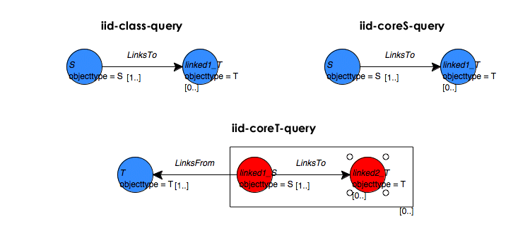

This section describes the script found in
$PROX_HOME/doc/user/tutorial/examples/generate-iid-data.py.
Import needed classes.
from kdl.prox.datagen2.structure import SyntheticGraphIID from kdl.prox.datagen2.attributes import AttributeGenerator from kdl.prox.model2.rpt import RPT from kdl.prox.util.stat import NormalDistribution from java.io import File
Define a helper function that loads an RPT from a file.
def loadRPT(modelFile):
return RPT().load(modelFile)
def loadFile(fileName):
return File(fileName)
Data generation requires an empty database. Check to see if the
database already contains data so we can warn users accordingly.
The method isProxTablesEmpty()
returns true if the top-level tables are defined and empty.
isEmpty = DB.isProxTablesEmpty()
If the database is not empty, ask the user whether to overwrite the existing data.
genData = 1 if (not isEmpty): prompt = "Database is not empty. Overwrite existing data?" genData = prox.getYesNoFromUser(prompt)
Do nothing if the database is not empty and the user says not to overwrite the existing data.
if (not genData): print 'No data generated'
Continue with data generation if the database is empty or if the user says to overwrite existing data.
Clear and initialize the database.
else: print 'Clearing database' DB.clearDB() print 'Initializing database' DB.initEmptyDB()
To define the i.i.d structure, we specify a probability distribution over degree distributions for the S objects. This script creates connected components with two different degree distributions for the S objects. One half of the S objects have normally distributed degrees with a mean of 2 and standard deviation approaching zero. The second half have normally distributed degrees with a mean of 5 and standard deviation of 1. The exact number of components having each of the specified degree distributions is determined probabilistically so you may not end up with exactly two S objects for each degree distribution.
degreeDistribs = [[0.5, NormalDistribution(2.0, 0.0000001)],
[0.5, NormalDistribution(5.0, 1.0)]]
Generate the i.i.d. graph structure by calling a constructor for
the SyntheticGraphIID class.
The SyntheticGraphIID generator creates objects and gives them
a type (saved in an objecttype attribute):
S for the core objects and
T for the peripheral objects (the objects
linked to the core S objects). Generating
i.i.d. data is unique in this regard—other
structure generators do not attach any attributes to the objects or
links that they create. The generated data will
include four S objects.
print 'creating graph structure' SyntheticGraphIID(4, degreeDistribs)
After creating the structure, we generate the attribute values. Note that the attribute generator can only generate attributes on objects and that all attributes are string valued.
We use a
relational dependency network
(RDN) to generate the
values for the attributes. The attribute names and their
distributions are specified by the constituent models of this RDN in
the form of
relational probability trees
(RPTs).
The data generator requires one RPT
and one query
for each attribute
in the generated data. In this example, we provide an RPT for the
S class labels and one each
for the other attributes on S and
T objects.
For each each attribute in the generated data, the attribute
generator executes a query that produces subgraphs having the
structure required by the corresponding RPT, saving the results in
a temporary container. For example, the
iid-coreS-query query creates the 1d-star
subgraphs required by the RPT for the
s_attr0_label attribute
(s-attr-rpt.xml).
The data generation process iterates the specified number of times, applying the RPTs one by one to the subgraphs in the corresponding container, in a random order. Applying the RPT predicts values for the associated attribute, which are recorded in the database. The values predicted by one application of the RPT are used as input to succeeding applications. In this way, the attribute values change over time (are conditioned) from their initial random values to values consistent with the provided model. See Chapter 7, Learning Models for more information on RPTs and RDNs.
The attribute generator
appends the string “_label” and
prepends “s_” or
“t_” as appropriate to the attribute
names specified in the RPTs. For example, if you specify an attribute
named “class” in
s-class-rpt.xml, the S objects will be given an attribute named
s_class_label. Similarly, specifying an
attribute named “attr1” in
t-attr-rpt.xml results in an attribute named
t_attr1_label in the generated
data. Although Proximity modifies the final attribute names as outlined
above, all attribute names must be unique within the RPT files.
Proximity requires that the RPT and query files be in the
current working directory ($PROX_HOME if you are
following the tutorial).
print 'generating i.i.d. attributes'
sClassQuery = loadFile("iid-class-query.xml")
sClassRPT = loadRPT("s-class-rpt.xml")
sAttrQuery = loadFile("iid-coreS-query.xml")
sAttrRPT = loadRPT("s-attr-rpt.xml")
tAttrQuery = loadFile("iid-coreT-query.xml")
tAttrRPT = loadRPT("t-attr-rpt.xml")
The first two queries get the 1d-stars for each
S object—all the
T objects connected to their core
S objects.
The last query, iid-coreT-query,
gets the 2d-stars for each T
object—for each T object it finds
any connected S objects and any
T objects connected to those
S objects.
|  |
The S class RPT
(s-class-rpt.xml) infers the value of
s_class_label based on the degree of the
S objects. The other two RPTs infer
the value of their respective attributes based on the value of
s_class_label for the current object (for
s-attr-rpt) or linked S
objects (for t-attr-rpt).
 |
Store the queries and RPTs in a Python dictionary that pairs queries with the RPTs that specify the corresponding attributes.
queriesAndModels = {sClassQuery: sClassRPT, \
sAttrQuery: sAttrRPT, tAttrQuery: tAttrRPT}
Specify the number of Gibbs sampling iterations to use in conditioning the data.
iters = 3
To generate the attribute values, we call a constructor for the
AttributeGenerator class.
AttributeGenerator(queriesAndModels, iters)
Exercise 6.8. Generating synthetic i.i.d. data:
![[Caution]](images/caution.png) |
|
|
The i.i.d. data generation script clears and overwrites the current database. Make sure that you are serving an empty or test database. |
-
All RPT files required for this exercise must be available in the current working directory (
$PROX_HOMEif you are following the tutorial). Copy the required files to the correct directory.>
cd $PROX_HOME>cp $PROX_HOME/doc/user/tutorial/examples/s-class-rpt.xml .>cp $PROX_HOME/doc/user/tutorial/examples/s-attr-rpt.xml .>cp $PROX_HOME/doc/user/tutorial/examples/t-attr-rpt.xml .>cp $PROX_HOME/doc/user/tutorial/examples/iid-class-query.xml .>cp $PROX_HOME/doc/user/tutorial/examples/iid-coreS-query.xml .>cp $PROX_HOME/doc/user/tutorial/examples/iid-coreT-query.xml .The DTD describing the RPT format must be present in the same directory as the RPT files. If you have not already done so, copy this file to the current working directory.
>
cp $PROX_HOME/resources/rpt2.dtd . -
Serve a new (empty) database.
>
Mserver --dbname DataGen_IID $PROX_HOME/resources/init-mserver.milRemember to use a port number > 40000 if you are using MonetDB 4.6.2.
-
Initialize the new Proximity database. Substitute the appropriate host and port information if you are running the MonetDB server on a different machine or are using a different port.
>
cd $PROX_HOME>bin/db-util.sh localhost:30000 init-db -
Start the Proximity Database Browser.
-
From the Script menu, choose Run Script. Proximity displays the Open dialog.
-
Navigate to the
$PROX_HOME/doc/user/tutorial/examplesdirectory and choosegenerate-iid-data.py. Click Open.Proximity opens a window to show you any output from the script along with a trace of the script execution. The final lines of your output should look similar to the following (leading information showing elapsed time and execution thread has been omitted from the trace for brevity):
INFO kdl.prox.qgraph2.QueryGraph2CompOp - * done executing query INFO kdl.prox.model2.rdn.RDN - RDN Iteration: 0 Status: finished running script
You can close this window after the script finishes.
Examine the generated objects and attributes in the Proximity Database Browser. You may want to execute a 1d-star query that finds all T objects directly connected to each S object (for example,
iid-coreS-query.xml). The subgraphs created by such a query are shown below. The results of each data generation run will be different and your results will not necessarily look exactly like that shown here.